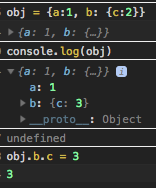
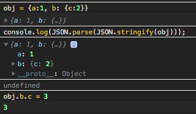

console 객체의 여러가지 사용법
source : https://medium.com/@mattburgess/beyond-console-log-2400fdf4a9d8
모르던 것들도 몇개 보여서 필요한 부분만 메모.
%c는 css의 c라고 기억하면 편할듯.%o라고 하면 객체를 바로 찍을 수 있음.console.table()에 두번째 파라메터로 컬럼 이름 배열 넘기면 첫번째 객체에서 pluck 한 내용만 표로 보여줌. 렌더링된 표에서 컬럼 누르면 정렬도 됨.console.trace()-console.log만으로는 찾기힘들때 스택트레이스 보여줌.
다른거 없나하고 MDN 조금 더 찾아봄.
객체 로그 정확하게 남기기
https://developer.mozilla.org/en-US/docs/Web/API/Console/log
Don't use console.log(obj);, use console.log(JSON.parse(JSON.stringify(obj)));.
그동안 미심쩍게 느끼던 부분이었는데, 이 주의사항을 이제야 확인함.
단순객체라면 바로 출력되서 크게 영향 없지만, 깊게 내포된 객체(deeply-nested object)를 그냥 console.log() 으로 객체 바로 찍으면, 깊게 들어가야 볼 수 있는 객체 정보는 콘솔에서 화살표 누르는 시점에 조회가 되서 값이 바뀌어 있을 수 있다. 라이프 사이클에 따라 조회가 안되는 경우도 있을 것 같다(그동안 내가 미심쩍게 생각하던 부분). 이 작동에 대한 공식적으로 문서화 된 부분은 아직 찾지는 못했는데, 눈으로 바로 볼 수 있을만한 부분까지는 표시하고(검색결과로는 설명에 따라 2depth라고도 하고, 그때그때 다르다고도 하고) 그 이상 뎁스는 생략해서 보여준다고. 아마 퍼포먼스 이슈 때문에 lazy 하게 작동하는 듯.
예)

obj.b.c에 2가 들어있는 obj 객체를 그냥 로깅하면 obj.b의 값은 생략되어 표시되는데, obj.b.c 의 값을 3으로 바꿔 버린 다음에 위에서 로깅해놓았던 obj 객체의 생략했던 부분을 펼치면, 원래 로그를 찍었던 시점의 값(2)이 아니라 현재 시점의 obj.b의 값(3)이 보이고 대체로 이것은 원하는 작동이 아닐 것이다.

obj.b.c에 2가 들어있는 obj 객체를 stringify해서 로그를 남기면, 이때도 obj.b의 값은 생략되어 보이지만, 로깅을 하고 나서 obj.b.c의 값을 바꾸고 아까 생략된 부분을 펼쳐도 아까 로그 남긴 시점의 값이 제대로 보인다.
위와 같은 케이스를 경험했던건 아니고, 그동안 미심쩍게 느꼈던 부분은 복잡한 페이지에서 객체 로그를 잔뜩 찍어놓고 나중에 몰아서 객체 세부 정보 보려고 하면 값이 안 보일때가 있어서 console.log가 "리터럴리하게" 있는 그대로 출력을 해놓는게 아니라 객체의 라이프사이클과 뭔가 관련이 있는 것 같다고 의심만 했었는데, 이 부분을 읽고 좀더 확실히 알게됨.